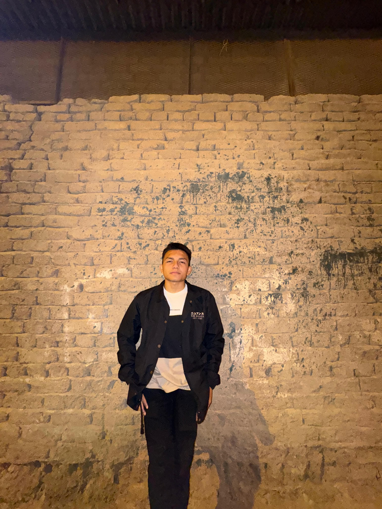

About Me ——

Who am I?
I'm a Creative Director and UI/UX Designer from Sydney, Australia, specializing in web development and print media. I enjoy transforming complex problems into simple, beautiful, and intuitive solutions. With a passion for creating seamless user experiences, I combine technical expertise with creative vision.
Personal Info
📞
Phone
+62 821-7625-3810📸
✉️
alishlh56@gmail.com
💻
GitHub
github.com/alishlh